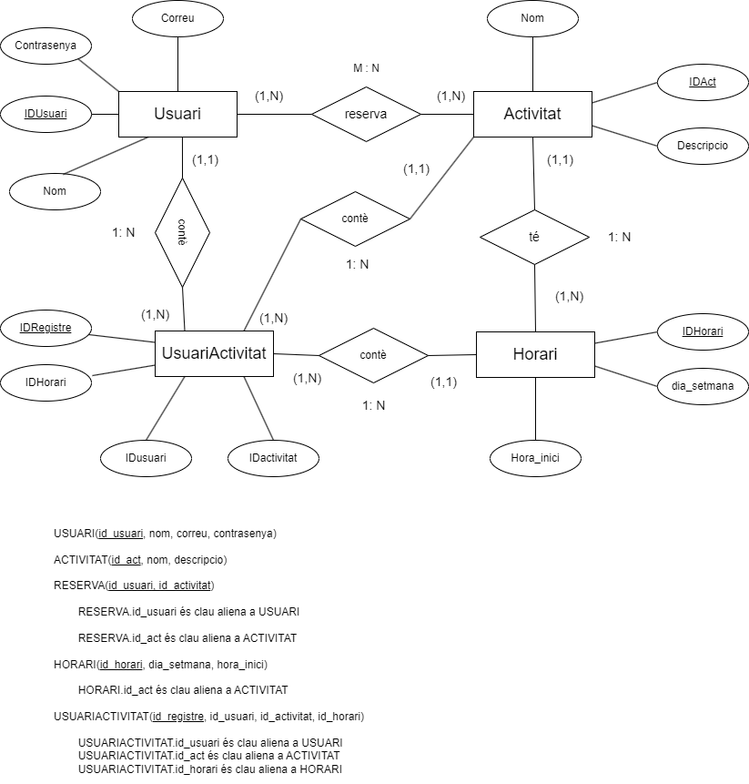
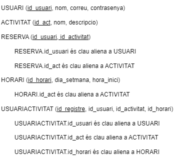
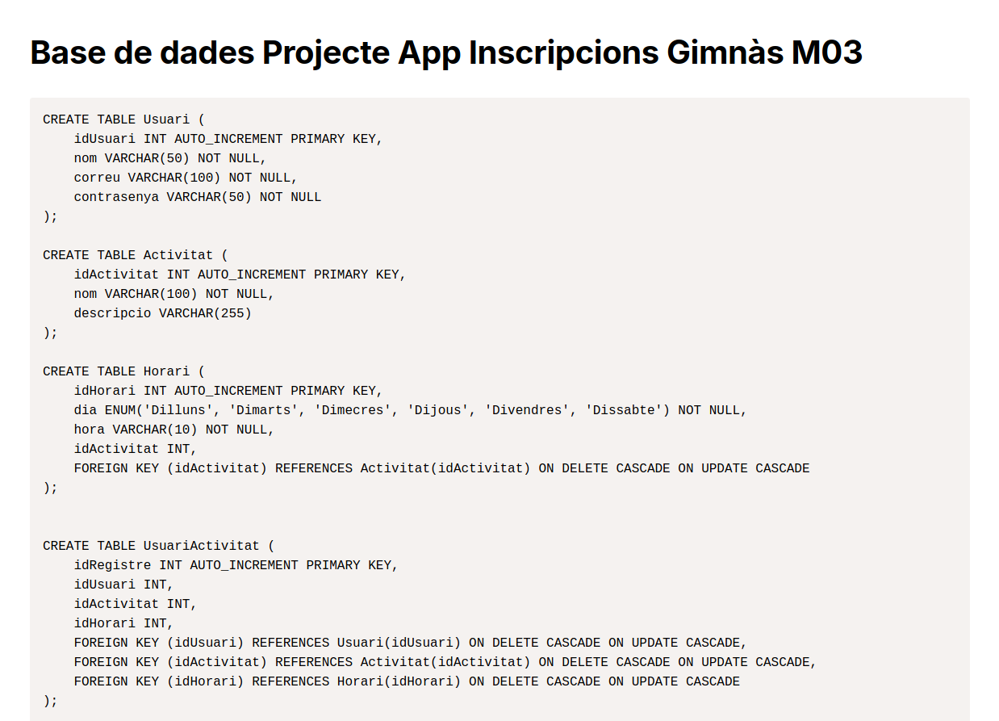
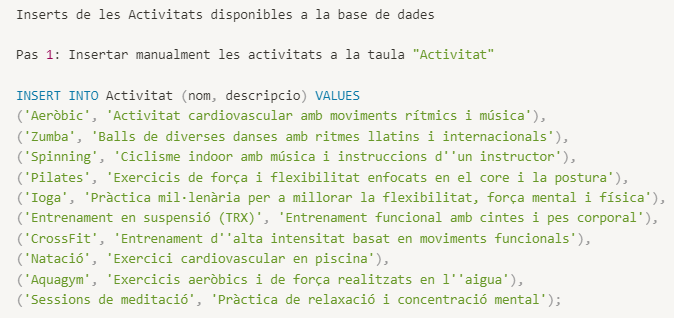
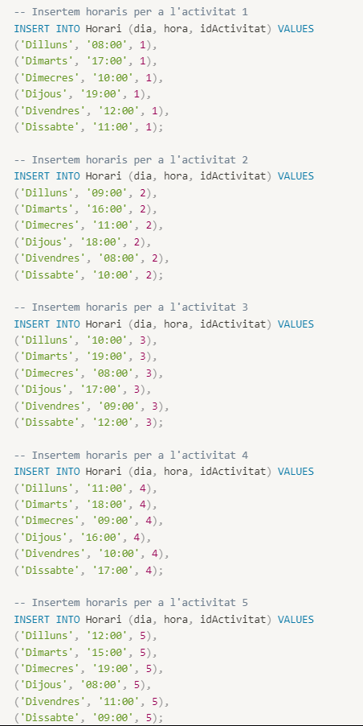
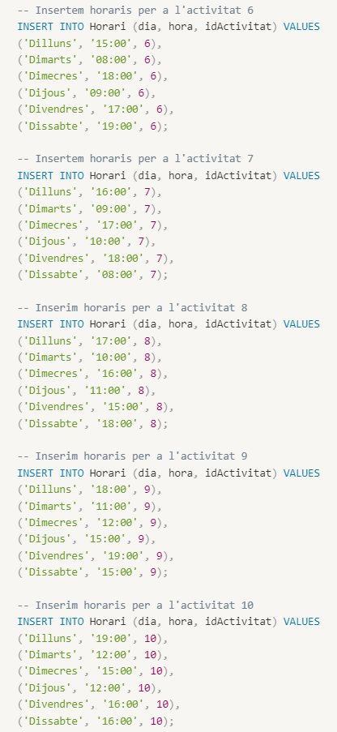

Disseny de BD
Model conceptual (Diagrama E-R)
El model E-R representa les entitats i les seves relacions per a la nostra aplicació de gestió d'activitats.
Model lògic-relacional
El model lògic-relacional descriu com les dades es mapegen a taules i relacions en el sistema de bases de dades.
Disseny físic
El disseny físic inclou l'script DDL SQL per a la creació de taules i els scripts SQL per a les proves (inserts).
Creació de taules
Aquesta imatge mostra l'script SQL utilitzat per crear les taules necessàries en la base de dades.
Inserts
Inserts d'activitats per a poblar la taula d'activitats amb dades de prova.
Primera part dels inserts per a la taula d'horaris.
Segona part dels inserts per a la taula d'horaris.